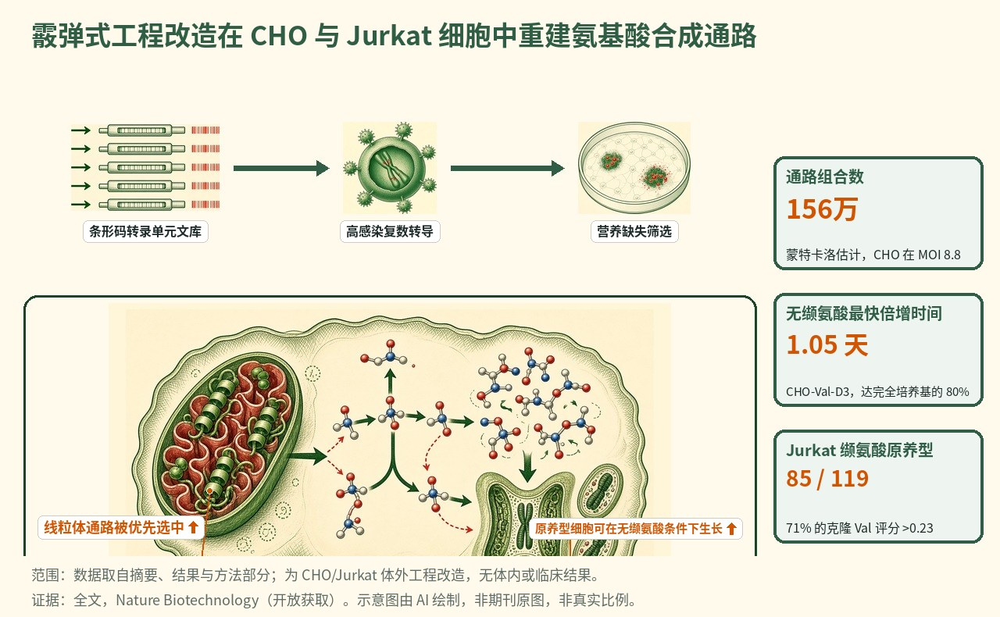

霰弹枪基因工程在哺乳动物细胞中重建必需氨基酸合成
霰弹枪基因工程以高感染复数将 40 个带条形码的转录单元文库送入 CHO 与 Jurkat 细胞；CHO 克隆在无缬氨酸条件下以 1.05–1.14 天倍增，一组六基因方案实现异亮氨酸原养型，Jurkat 克隆在无缬氨酸条件下以约 1.9–2.0 天／倍增生长。

- 以高感染复数递送带条形码的小型转录单元
- 通过氨基酸缺失筛选回收功能通路
- CHO 中实现接近野生型的无缬氨酸生长，并首次实现异亮氨酸原养型
- 功能通路偏好将通路酶定位于线粒体
示意图概括了带条形码转录单元的霰弹枪式递送、在氨基酸缺失培养基中的筛选，以及在 CHO 与 Jurkat 细胞中回收定位于线粒体的缬氨酸与异亮氨酸通路方案。
背景与未决问题
哺乳动物代谢工程的瓶颈，与其说在于 DNA 合成，不如说在于大型多基因构建体的搭建、递送与迭代有多慢。编码序列的选择、启动子强度、化学计量比与细胞器内的放置，共同构成一个逐一递送无法充分抽样的庞大组合空间。
在 Nature Biotechnology 上，Trolle 等提出霰弹枪基因工程（SGE）：以带条形码的小型转录单元（TU）进行高感染复数侵染，让每个细胞抽样一种不同的通路；经必需氨基酸缺失筛选存活下来的细胞再测序以回收起作用的条形码。其检验案例是在 CHO 细胞中重建缬氨酸与异亮氨酸的生物合成，并在 Jurkat 人 T 细胞中重建缬氨酸合成。
研究设计
十个大肠杆菌编码序列（ilvN、ilvB、ilvC、ilvD、ilvA 及反馈变体 ilvA L481F 与 ilvA L447F，加上 AHAS II 亚基 ilvG 与 ilvM，以及 GFP）与 EF1a 或 PGK 启动子配对，并含或不含线粒体靶向序列（共 40 个 TU）。用于启动子–定位与编码序列的条形码置于 3′ UTR 内约 100 bp 的范围内。经 Golden Gate 组装与慢病毒包装后，242 万个 CHO 细胞以估计 MOI 8.8 侵染，300 万个 Jurkat 细胞以 MOI 3.4 侵染。
筛选使用含透析血清的氨基酸缺失 RPMI。原养型以 PrestoBlue 评分，即在无氨基酸与补足培养基中的代谢活性之比（相对亲本两倍为阈值；强 >0.75）。基因型来自带 z 评分过滤的扩增子测序，并对选定克隆进行长读长测序、RNA-seq 与 13C 代谢组学核验。
关键结果
CHO 中接近野生型生长的缬氨酸原养型
在 4.25 µM 缬氨酸上培养 15 天后，SGE 群体中出现克隆性增殖，而 CHO-GFP 对照未出现。全部 16 个挑选的克隆均达到 Val 评分阈值。CHO-Val-D1 与 CHO-Val-D3 在无缬氨酸培养基中生长 10 天，分别以每倍增 1.14 天和 1.05 天（补足的 83% 与 80%），而亲本细胞在第 7 天前死亡——相比之下，早先理性设计的 pMTIV 为每倍增 3.77 天（补足的 26%）。重同位素标记达到 96.5% 与 96.6% 13C2–5 缬氨酸，而 pMTIV 为 32.2%。强原养型指纹指向定位于线粒体、由 PGK 驱动的 ilvN、ilvB、ilvC 与 ilvD（在 MOI 8 时富集 48 倍）。采用该架构的单个 Flp-In 构建体在无缬氨酸 RPMI 中实现每倍增 1.25 天（补足的 74%）。
由六基因方案实现的异亮氨酸原养型
尽管共享部分通路步骤，理性设计此前并未产生异亮氨酸独立性。在 1.5–6 µM 异亮氨酸下筛选后，46 个克隆中有 19 个（41%）改善了 Ile 评分。CHO-Ile-10-H1 以 1.69 天倍增（补足的 48%），CHO-Ile-10-H2 以 3.04 天倍增（33%），带标记异亮氨酸分别为 78.5% 与 39.5% 13C2–6。每个强原养型克隆都携带 ilvB、ilvC、ilvD、ilvG、ilvM 与部分抗反馈的 ilvA L481F，且以线粒体定位为主（较预期高 217 倍；无一克隆六个基因全部位于胞质）。两个重点克隆分别携带约 13 个与 10 个 TU（约 52 kb 与 41 kb 整合 DNA）。
Jurkat 的缬氨酸原养型与一个预测分类器
在 Jurkat 细胞中，同一文库在 0–4.25 µM 缬氨酸范围内于第 21 天实现 Jurkat-Val 恢复，而 GFP 对照未回弹。在 119 个扩增克隆中，85 个（71%）达到 Val 评分 >0.23；Jurkat-Val-31 与 Jurkat-Val-32 分别以 2.02 天和 1.87 天倍增（补足的 50% 与 52%）。去除克隆姊妹后，复合方案聚焦于定位于线粒体、由 PGK 驱动的 ilvN、ilvB、ilvC 与 ilvD（富集 31 倍与 283 倍）。基于 TU 相对丰度的随机森林模型对原养型的分类平均准确率为 0.942±0.005、ROC AUC 为 0.993±0.006。在 Jurkat 中进行的异亮氨酸筛选在 32 天内未能胜过 GFP 对照，这与在 MOI 约 3.4 时六基因方案的稀有性相符。
机制解读
论文所证实的： 以高 MOI 递送带条形码的 TU，把每个细胞变成一次独立的通路实验；营养缺失则筛选出能恢复生物合成的组合。在 CHO 缬氨酸、CHO 异亮氨酸与 Jurkat 缬氨酸三类筛选中，起作用的方案都偏好将大肠杆菌来源的酶定位于线粒体，且常整合数十千碱基的合成 DNA。条形码判读与长读长／RNA-seq 核验大体一致；13C 标记确认了内源合成。
作者假设： 线粒体偏好可能反映该较小区室中更高的局部丙酮酸、辅因子可得性或酶浓度。作者提出 SGE 数据集可作为生成式通路模型的训练数据；Jurkat 分类器是一个试点，而非成熟的设计规则。
局限与不确定性
- 该工作是在 CHO 与 Jurkat 细胞系中的体外工程；没有体内、原代细胞或治疗性疗效读出。
- 慢病毒包装使文库发生偏斜（EF1a 构建体代表性不足；ilvG 占读数的 1.2%），作者还提示可能存在条形码互换。
- 现有实现的 SGE 需要一个可筛选的表型。在所用 MOI 与文库深度下，Jurkat 中未回收到异亮氨酸原养型。正文中紧凑的单载体重建仅针对优化后的缬氨酸通路，而非六基因的异亮氨酸方案。
临床与产业意义
若类似筛选能扩展到其他营养物或应激性状，SGE 可帮助为生物制造底盘发现多基因代谢方案；作者强调的近期用途是更简单的培养基以及用于学习的通路规模数据集——而非来自本文的临床产品。直接结果是：哺乳动物细胞可以被筛选，而不仅靠手工设计，来获得通路规模的必需氨基酸生物合成，其中线粒体定位是一个反复出现的设计变量。